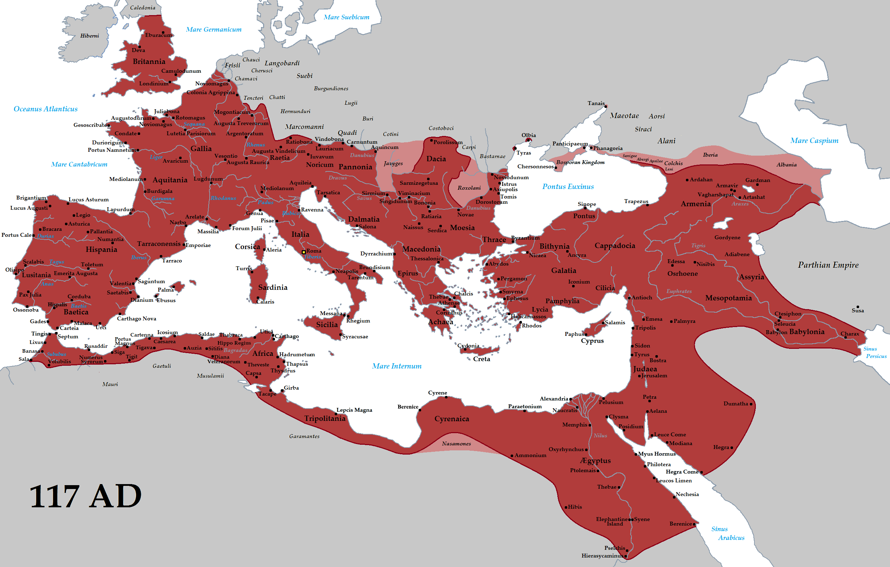

The history of Rome includes the history of the city of Rome as well as the civilisation of ancient Rome. Roman history has been influential on the modern world, especially in the history of the Catholic Church, and Roman law has influenced many modern legal systems. Roman history can be divided into the following periods:
- Pre-historical and early Rome, covering Rome's earliest inhabitants and the legend of its founding by Romulus
- The period of Etruscan dominance and the regal period, in which, according to tradition, Romulus was the first of seven kings
- The Roman Republic, which commenced in 509 BC when kings were replaced with rule by elected magistrates. The period was marked by vast expansion of Roman territory. During the 5th century BC, Rome gained regional dominance in Latium. With the Punic Wars from 264 to 146 BC, ancient Rome gained dominance over the Western Mediterranean, displacing Carthage as the dominant regional power.
- The Roman Empire followed the Republic, which waned with the rise of Julius Caesar, and by all measures concluded after a period of civil war and the victory of Caesar's adopted son, Octavian, in 27 BC over Mark Antony. With the collapse of the Western Roman Empire, Rome's power declined, and it eventually became part of the Eastern Roman Empire, as the Duchy of Rome, until the 8th century. At this time, the city was reduced to a fraction of its former size, being sacked several times in the 5th to 6th centuries, even temporarily depopulated entirely.
- Medieval Rome is characterized by a break with Constantinople and the formation of the Papal States. The Papacy struggled to retain influence in the emerging Holy Roman Empire, and during the saeculum obscurum, the population of Rome fell to as low as 30,000 inhabitants. Following the East–West Schism and the limited success in the Investiture Controversy, the Papacy did gain considerable influence in the High Middle Ages, but with the Avignon Papacy and the Western Schism, the city of Rome was reduced to irrelevance, its population falling below 20,000. Rome's decline into complete irrelevance during the medieval period, with the associated lack of construction activity, assured the survival of very significant ancient Roman material remains in the centre of the city, some abandoned and others continuing in use.
- The Roman Renaissance occurred in the 15th century, when Rome replaced Florence as the centre of artistic and cultural influence. The Roman Renaissance was cut short abruptly with the devastation of the city in 1527, but the Papacy reasserted itself in the Counter-Reformation, and the city continued to flourish during the early modern period. Rome was annexed by Napoleon and was part of the First French Empire from 1798 to 1814.
- Modern history, the period from the 19th century to the present. Rome came under siege again after the Allied invasion of Italy and was bombed several times. It was declared an open city on 14 August 1943. Rome became the capital of the Italian Republic (established in 1946). With a population of 4.4 million (as of 2015; 2.9 million within city limits), it is the largest city in Italy. It is among the largest urban areas of the European Union and classified as a global city.
Pre-historical and early Rome
Etruscan Rome
The Roman Republic
The Roman Empire
Medieval Rome

The Roman Renaissance

Greater Italy
Modern Italian Republic